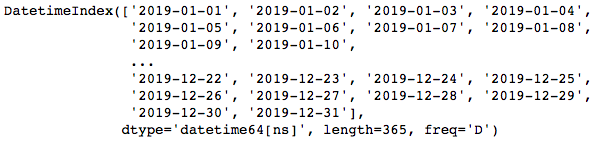
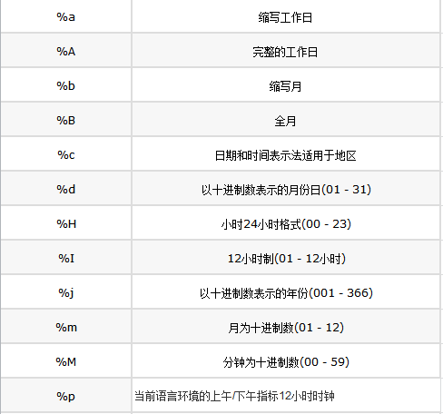
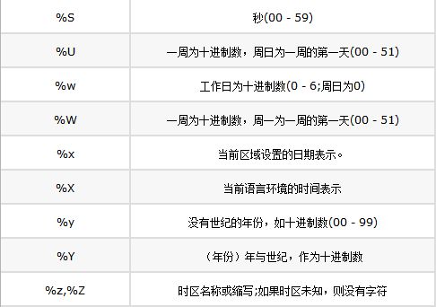
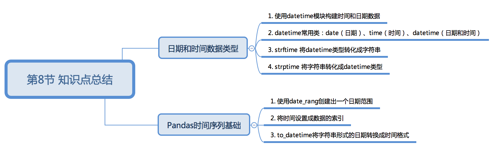

1. 搭上时间分析的飞剑
1.1.1. 课程介绍
Hello, 我是小K，很高兴又和大家见面了，我们一起继续学习Python数据分析。
为了让你能不受干扰的在学习数据分析路上饱览胜景，请将屏幕调整成全屏，Windows系统：请按F11（或Fn+F11)；苹果系统：请同时按control+command+F。
在金融、经济、物理学等领域，都需要在多个时间点观测或者测量数据，这样就产生了关于时间序列的数据。
时间序列数据（Time Series Data）是在不同时间上收集到的数据，这类数据是按时间顺序收集到的，用于描述现象随时间变化的情况。
学会如何对时间序列数据进行巧妙的处理非常重要，Pandas为我们提供了强大的时间序列数据处理的方法，本节小K将带你入门时间序列。

1.1.2. 日期和时间数据类型
Python标准库包含了日期和时间数据的数据类型，datetime模块是开始处理时间数据最广泛的。
datetime的日期和时间数据类型
下面我们先简单的了解下python日期和时间数据类型。
datetime是一个关于时间的库，常用的类有：
| 类型 | 说明 |
|---|---|
| date | 以公历形式存储日历日期（年、月、日） |
| time | 将时间存储为时、分、秒 |
| datetime | 存储日期和时间 |
下面我们一起看一下，datetime各个类型的创建和获取
日期(date)类型的使用：
# 导入datetime模块
import datetime
# 创建日期
date = datetime.date(2019, 9, 9)
print(date)
# 获取年
print(date.year)
# 获取月
print(date.month)
# 获取日
print(date.day)
时间(time)类型的使用:
# 创建时间
import datetime
time = datetime.time(13, 14, 20)
print(time)
# 获取小时
print(time.hour)
# 获取分钟
print(time.minute)
# 获取秒
print(time.second)
日期和时间的结合体--日期时间(datetime)：
import datetime
# 创建日期时间
datetime = datetime.datetime(2019, 9, 9, 13, 14, 20)
print(datetime)
# 获取年
print(datetime.year)
# 获取月
print(datetime.month)
# 获取日
print(datetime.day)
# 获取小时
print(datetime.hour)
# 获取分钟
print(datetime.minute)
# 获取秒
print(datetime.second)
datetime的time方法可以创建时间，date方法可以创建日期，datetime方法则是日期和时间的结合体。
同过year、month、day、hour、minute、second属性，可以获取到相应的日期或者时间的值。
同样，使用datetime.datetime.now()方法可以获取到当前时间：
datetime.datetime.now()
请分别复制上面的代码到代码框中，体验datetime的神奇：
此处是代码 ————————————— —————————— 终端
现在我们知道如何使用datetime模块创建时间，但是有些时候我们可能需要将datetime类型转成字符串样式，
例如：将datetime.datetime(2019, 9, 9, 13, 14, 20)转换成2019-9-9 13:14:20样式的字符串。
datetime与字符串转换
有的同学会问道：“datetime.datetime(2019, 9, 9, 13, 14, 20)输出的的结果不就是2019-9-9 13:14:20吗？为什么还需要变？”。
没错，它的结果就是我们想要的样式，但是，需要注意的是它的类型是datetime，并不是str。
如果我们只是单一的想改变类型，就可以使用强制类型转换：
此处是代码 ————————————— —————————— 终端
import datetime
date_time = datetime.datetime(2019, 9, 9, 13, 14, 20)
print(type(date_time))
str_date_time = str(date_time)
print(str_date_time)
print(type(str_date_time))
但是，小K想提一个需求：将datetime.datetime(2019, 9, 9, 13, 14, 20)转换成9/9/2019 13:14样式的字符串。
莫慌，使用strftime()方法便可破解此需求。
此处是代码 ————————————— —————————— 终端
import datetime
date_time = datetime.datetime(2019, 9, 9, 13, 14, 20)
str_time = date_time.strftime('%m/%d/%Y %H:%M')
str_time
strftime()方法的作用是将时间格式转化为自定义字符串格式，格式可以完全自定义。
%m/%d/%Y %H:%M就是格式化以后的样式，%m、%d等是时间格式化占位符。
关于时间格式的汇总：


利用这些格式符，我们就可以随意的破解将datetime转化成str这类的要求。
磨人的小K的第二个需求来了，请将str类型转化成datetime类型。
例如：将字符串类型的Aug-23-19 20:13转化成2019-08-23 20:13:00样式的datetime类型。
同理，使用strptime()方法便可破解此需求。
此处是代码 ————————————— —————————— 终端
import datetime
strp = datetime.datetime.strptime('Aug-23-19 20:13', '%b-%d-%y %H:%M')
print(strp)
strptime()方法的作用是字符串时间转化为datetime格式，需要注意的是按一定的格式输出时间。
例如：第二个参数不可写成%B-%d-%Y %H:%M ，或者%b / %d / %Y %H:%M
1.1.3. Pandas时间序列基础
前面我们了解了Python内置的datetime模块对时间和日期的处理方法，接下来我们看一下Pandas处理时间上有哪些方法。
创建一个时间范围
使用Pandas的date_range()方法可以快速创建出一个日期范围。
pd.date_range(start=None,end=None,periods=None,freq="D")
start:日期范围的开始
end:日期范围的结束
periods:固定日期的个数
freq:日期偏移量，取值为string, 默认为'D'，即：一天为日期偏移量
接下来，我们看一下date_range()的几种使用方式。
使用start和end以及默认的freq参数创建：
date= pd.date_range(start='20190505',end='20190606')
使用start和end以及频率参数freq为10天创建：
date= pd.date_range(start='20190505',end='20190606',freq="10D")
使用start和periods以及默认的频率参数创建：
date= pd.date_range(start='20190505',periods=10,freq="D")
分别复制上面的带码到代码框运行，观察结果：
此处是代码 ————————————— —————————— 终端
import pandas as pd
根据上面的运行结果可以得出以下结论：
start和end以及freq配合能够生成start和end范围内以频率freq的一组时间索引。
start和periods以及freq配合能够生成从start开始的频率为freq的periods个时间索引。
上面我们提到时间索引，是因为date_range()方法生成的对象类型是DatetimeIndex，这个类型就是pandas中的时间索引类型。
关于频率的更多缩写：
| 别名 | 说明 |
|---|---|
| D | 日历日的每天 |
| B | 工作日的每天 |
| H | 每小时 |
| T或min | 每分钟 |
| S | 每秒 |
| L或ms | 每毫秒 |
| U | 每微秒 |
| M | 日历日的月底日期 |
| BM | 工作日的月底日期 |
| MS | 日历日的月初日期 |
| BMS | 工作日的月初日期 |
在数据中索引和切片时间序列数据
有时候我们会对一天或者一个月的数据进行分析，这就需要我们将时间设置成数据的索引，然后通过时间索引获取到一定时间范围内的数据进行分析。
现在我们创建一个以时间序列为索引的Series数据。
首先，使用pd.date_range()来创建从2019-01-01开始的时间索引：
import pandas as pd
time_index = pd.date_range('2019-01-01', periods=365)

然后，使用numpy的随机数创建365个随机整数：
import numpy as np
time_data = np.random.randint(100,size=365)
最后，创建出以时间序列为索引的Series数据，运行下方代码，产看数据：
此处是代码 ————————————— —————————— 终端
import pandas as pd
import numpy as np
time_index = pd.date_range('2019-01-01', periods=400)
time_data = np.random.randint(100,size=400)
date_time = pd.Series(data=time_data,index=time_index)
date_time
现在已经成功创建出数据，并将时间索引值设置成数据的索引项，接下来的重点是如何根据时间序列索引获取数据呢？
可以依据年份进行索引：
date_time['2020']
可以依据年和月进行索引：
date_time['2019-10']
可以使用时间戳进行切片获取数据
date_time['2019-10-05':'2019-10-10']
分别复制上面的代码，查看运行结果：
此处是代码 ————————————— —————————— 终端
通过上面的三行代码，大家会发现我们在获取数据的时候可以直接使用字符串的形势获取以及切片操作。
to_datetime改变时间格式
有的时候用csv导入到时间数据时，默认的是字符串的数据类型 ，当可视化的时候，会出现没有按时间先后顺序的方式绘图 ，所以需要将字符串解析为时间类型的数据类型。
使用Pandas的to_datetime()方法可以将字符串形式的日期转换成时间格式。
pd.to_datetime(arg,format=None)
arg：需要修改的数据
format：数据的格式
to_datetime()方法会将字符串类型的是时间转换成Timestamp('2019-10-05 00:00:00')时间戳类型。
pd.to_datetime('2019-10-05')
如果想对时间格式修改，还可以使用to_pydatetime()方法将Timestamp类型转换成datetime类型。
pd.to_datetime('2019-10-05').to_pydatetime()
需要注意的是字符串日期中包含中文，我们可以这样处理：
pd.to_datetime('2019年10月10日',format='%Y年%m月%d日')
请抄写上面代码到代码框，并运行。
此处是代码 ————————————— —————————— 终端
1.1.4. 本节总结
本节我们一起学习了日期和时间数据类型的创建以及Pandas对时间序列的处理。
最后，我们来总结一下本节课的知识点：

1.1.5. 下节预告
1.1.6. 练习1
题目：销售额的华山论剑
题目要求：
现在我们有一份某电商超市从2016年到2019年的部分销售数据，路径为：./data/Commerce.xls
我们的字段有订单 ID，客户对象，订单日期，邮寄方式，地区，地区经理，销售额，数量，退回，折扣等，在这些字段下面，一共有近一万条数据。
请根据数据完成下面的需求：
- 分别算出2016年到2019年，每年5月份的总销售额。
- 2018年各地区的5月份的总销售额对比。
参考答案：
import pandas as pd
data = pd.read_excel('./data/Commerce.xls')
# 了解数据基本情况
# data.head()
# 将订单日期设置为数据的索引
data.index = data['订单日期']
# 分别计算每年5月份的销售额
sales16 = data['2016-05']['销售额'].sum()
sales17 = data['2017-05']['销售额'].sum()
sales18 = data['2018-05']['销售额'].sum()
sales19 = data['2019-05']['销售额'].sum()
# 获取2018年五月份数据
sales18 = data['2018-05']
# 根据地区分组
groups = sales18.groupby('地区')
# 分别计算各地区销售总额
for group_name,group_df in groups:
sales_all = group_df['销售额'].sum()
print('{}地区5月份总销售额是{}'.format(group_name,sales_all))
1.1.7. 练习2
题目：天外飞仙，各显神通
题目要求：
本练习继续使用某电商超市从2016年到2019年的部分销售数据，路径为：./data/Commerce.xls。
- 计算出2018年各个季度的总销售额（1-3月为第一季度，4-6为第二季度，7-9为第三季度，10-12为第四季度）。
- 计算出2018年各季度各地区的总销售额。
参考答案：
import pandas as pd
data = pd.read_excel('./data/Commerce.xls')
# 将订单日期设置为数据的索引
data.index = data['订单日期']
# 根据本节课知识点，分别获取每个季度销售总额
Q1 = data['2018-01':'2018-03']['销售额'].sum()
Q2 = data['2018-04':'2018-06']['销售额'].sum()
Q3 = data['2018-07':'2018-09']['销售额'].sum()
Q4 = data['2018-10':'2018-12']['销售额'].sum()
print('2018年Q1总销售额{},Q2总销售额{},Q3总销售额{},Q4总销售额{}'.format(Q1,Q2,Q3,Q4))
# 2018年各季度各地区的总销售额
# 获取每个季度的数据
Q1_area = data['2018-01':'2018-03'].groupby('地区')['销售额'].sum()
Q2_area = data['2018-04':'2018-06'].groupby('地区')['销售额'].sum()
Q3_area = data['2018-07':'2018-09'].groupby('地区')['销售额'].sum()
Q4_area = data['2018-10':'2018-12'].groupby('地区')['销售额'].sum()
print("""
2018年各季度各地区的总销售额:
Q1:{}
Q2:{}
Q3:{}
Q4:{}
""".format(Q1_area,Q2_area,Q3_area,Q4_area))